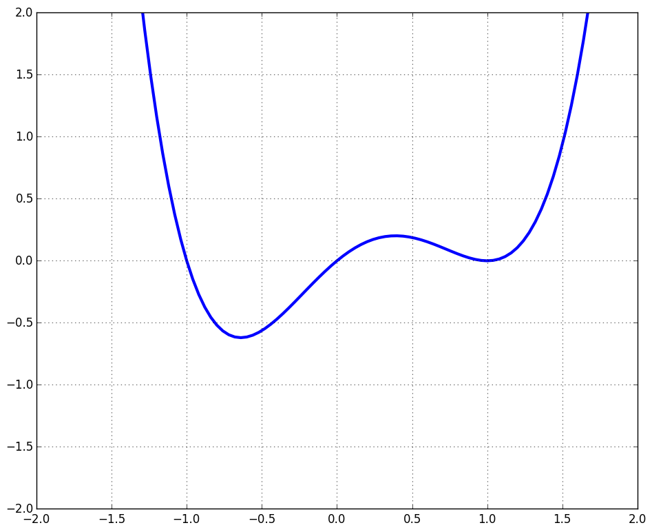
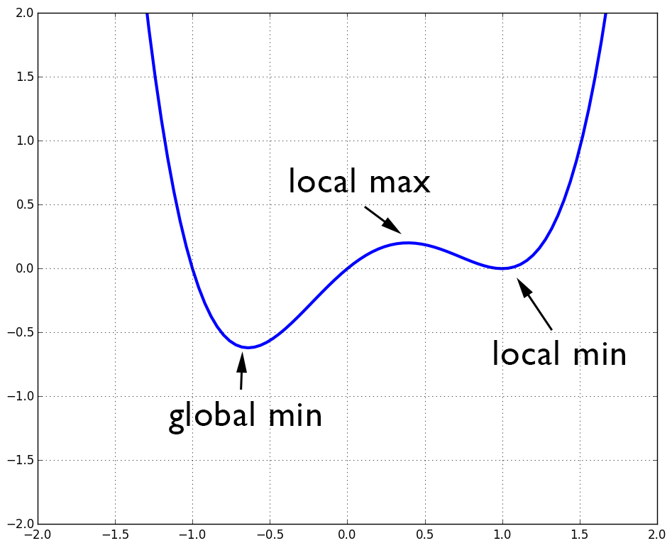

| « 3.2 | up | 3.4 » |
3.3 — Polynomial Functions
Summation Notation
$$ a_1 + a_2 + \ldots + a_n = \sum_{j=1}^n a_j $$ For example, $$ 1+2+3+4 = \sum_{j=1}^4 j $$Polynomial definition
A polynomial of degree $n$ is function which can be written in the form: $$ f(x) = a_n x^n + a_{n-1} x^{n-1} + \ldots + a_1x + a_0 = \sum_{j=0}^n a_jx^j $$ where $n$ is a non-negative integer.If the roots of are known, the polynomial may also be written in factored form: $$ f(x) = A(x-r_1)(x-r_2) \ldots (x-r_n) $$ where $A$ is some constant and $r_1,r_2, \ldots r_n$ are the $n$ roots of the polynomial of degree $n$.
Note that $f(r_j) = 0$ for $j=1,2,\ldots,n$.
The terms, $(x-r_j)$, $j=1,2,\ldots,n$, are called the factors of $f$.
Properties
- The domain of a polynomial is all real numbers — also denoted by $\mathbb{R}$ or $(-\infty, \infty)$.
- Polynomials are continuous functions
- Polynomials are smooth functions
Which are polynomials? What is the degree, if so?
- $y=\sqrt{2}x^5+2x-1$
- $y=5x^{\sqrt{2}}+5x-1$
- $y=(x^2+1)^2(x-3)$
- $y=x^{-1}$
- $y=\frac{x^3+2x-1}{x^2-3}$
- $y=2x^{\frac{1}{2}}+6x^2-9$
- $y=\sqrt{2x}+x$
- $y=x^0$
- Yes, degree 5.
- No.
- Yes, degree 5.
- No.
- No.
- No.
- No.
- Yes, degree 0.
Find all real zeros of the function, $f(x) = (x-2)^2(x-3)(x^2+4)$.
$x=2,3$
Root multiplicity
If $f(x)$ is polynomial, $r$ is a root of $f$, $(x-r)^k$ is a factor of $f$, but $(x-r)^{k+1}$ is not a factor, then $r$ is a root of multiplicity $k$.- If a root has even multiplicity, then the graph of $f$ only touches the x-axis at the root.
- If a root has odd multiplicity, then the graph passes through the x-axis at the root
Find all real zeros and their multiplicities for the function, $f(x) = x(x^2-1)(x-1)$.
$x=1$, degree 2
$x=-1$, degree 1
$x=0$, degree 1
$x=-1$, degree 1
$x=0$, degree 1
Select the graph of the following:

- $y=x^2(x-1)(x+1)$
- $y=x(x-1)(x+1)^2$
- $y=x(x-1)(x+1)$
- $y=x(x-1)^2(x+1)$
Option 4.
Local Extrema

End behavior of polynomials
If $f$ is a polynomial, then it's behavior for large $|x|$ is determined by the parity of its degree and the sign of the coefficient of its largest degree.Consider a generic polynomial: $f(x) = a_nx^n + \ldots + a_1x + a_0$. Then the following properties hold:
- If $f$ is even degree and $a_n \gt 0$, then $f(x) \rightarrow \infty$ as $x \rightarrow \infty$ and $f(x) \rightarrow \infty$ as $x \rightarrow -\infty$
- If $f$ is even degree and $a_n \lt 0$, then $f(x) \rightarrow -\infty$ as $x \rightarrow \infty$ and $f(x) \rightarrow -\infty$ as $x \rightarrow -\infty$
- If $f$ is odd degree and $a_n \gt 0$, then $f(x) \rightarrow \infty$ as $x \rightarrow \infty$ and $f(x) \rightarrow -\infty$ as $x \rightarrow -\infty$
- If $f$ is odd degree and $a_n \lt 0$, then $f(x) \rightarrow -\infty$ as $x \rightarrow \infty$ and $f(x) \rightarrow \infty$ as $x \rightarrow -\infty$
Which are false for the polynomial, $f(x)=-(x-1)(x+6)^4$?
- $f$ has a local min at $x=-6$.
- The $y$-intercept is 1296.
- $f$ behaves like $y=-x^5$ for large $|x|$.
- $f$ has 5 $x$-intercepts.
- $f$ has degree 5.
- True
- True
- True
- False
- True